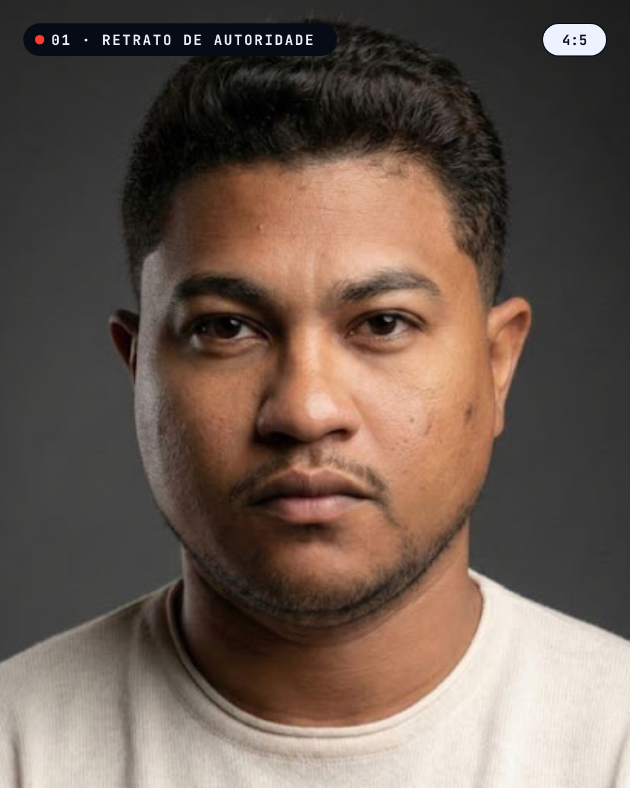

01
Retrato de autoridade
- Sentado num banco alto, corpo levemente virado (45°), rosto de frente para a câmera.
- Queixo um pouco pra frente e pra baixo (alonga o pescoço e define o rosto).
- Fazer 3 variações: sério, meio sorriso, sorriso aberto.
- Ombros relaxados, mãos fora do quadro.